Listing photo, our render, our render polished.
The render is the plan-built apartment with the furnishing solver's real products, seen from a camera estimated from the listing photo (field of view from VGGT, pitch, eye height and distance from the floor/ceiling lines of the photo's segmentation). The polish is Stable Diffusion 1.5 image-to-image at low strength, held to our render's depth by ControlNet and given the photo only as a style and lighting reference. It cannot move or add objects; the geometry and every item are ours. The photos come from the building's gallery, so they may show another unit with the same plan type: differences in windows, mouldings and floors are real differences between the photo and our model, not polish artefacts.
Living Room gs-22612_plan_03 · photo gs-22612/03.jpg · closest
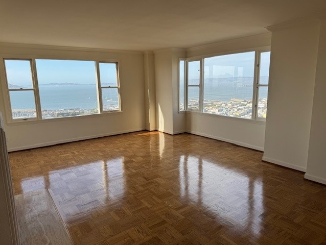
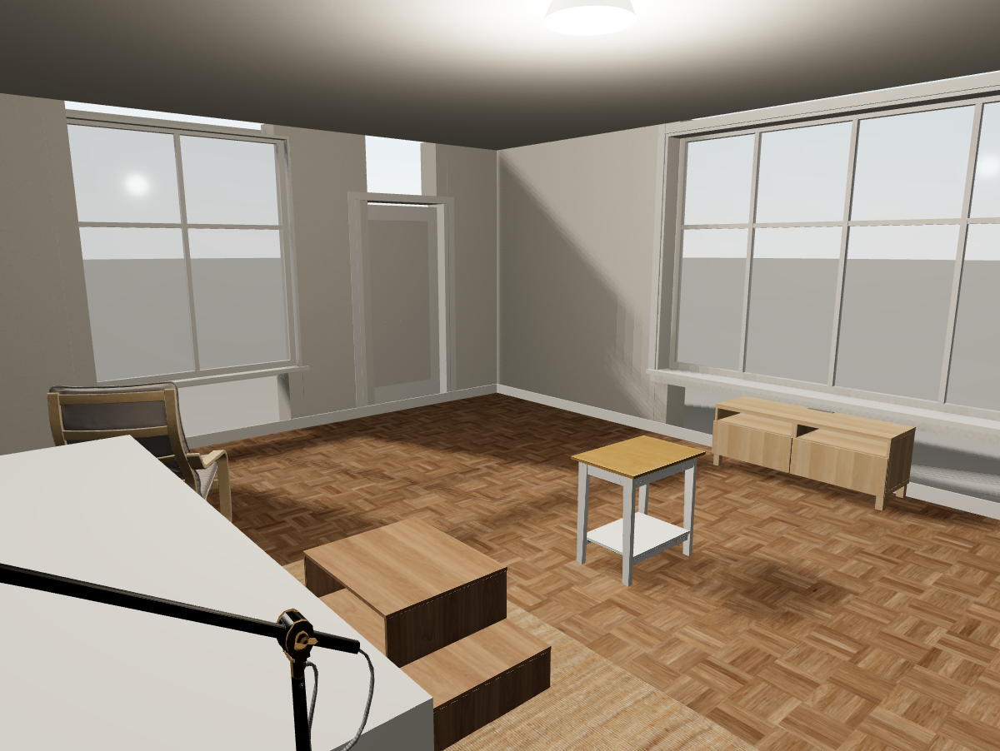
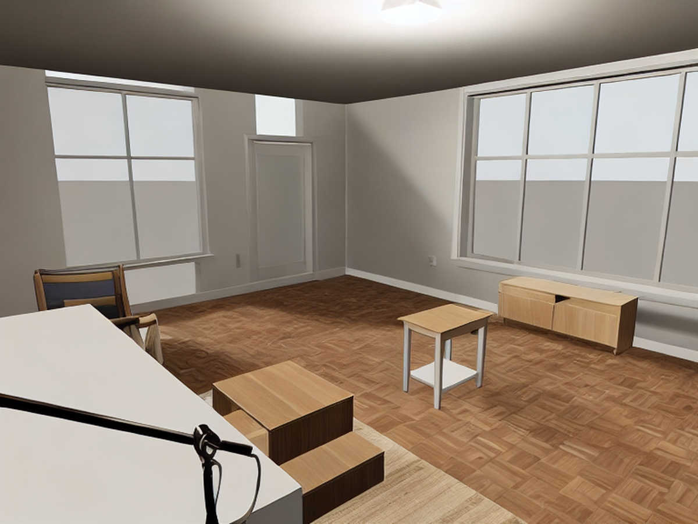
Closest pair. Same composition: window wall on the left, a corner, and a second window wall on the right; parquet in a similar tone; the camera matches within a few degrees. The differences: the photo has a cased pillar and bay windows with a sea view, while we have flat four-pane windows and a sky-and-ground shader outside; our sofa (the white block, bottom left) is in the foreground because the solver put it on the wall the photographer stood against. The polish warms the light slightly and changes almost nothing else.
pos (5.94, 1.64, 5.08) m · yaw 229° · pitch -11.0° · hfov 73° (VGGT) · photo metrology: eye 1.64 m, 4.9 m from the far wall, -49° off its normal · clamped into the plan room
polish: SD 1.5 img2img strength 0.35, 24 steps, depth ControlNet 0.9 on our render's depth, IP-Adapter 0.5 on the listing photo, 38.3 s on MPS · polish changed pixels by 8.1/255 on average; 71% of the render's edges are within 2 px in the polished image
prompt: interior real-estate photo of a furnished living room, dark brown wood floor, white painted walls, honey brown ceiling, large windows with daylight, natural light, photorealistic, sharp, high dynamic range
Bedroom gs-22612_plan_03 · photo gs-22612/04.jpg · close
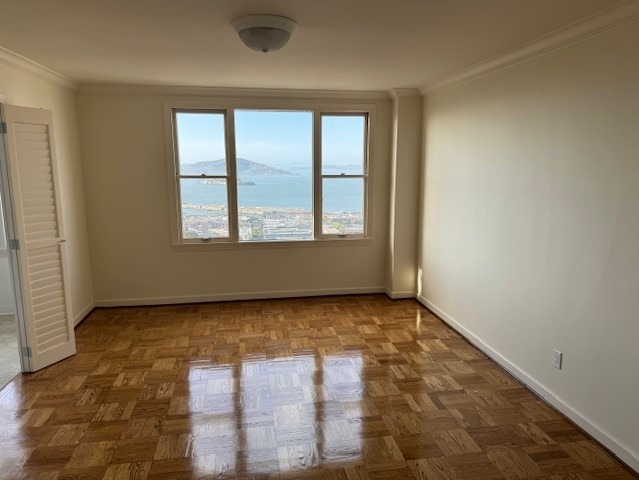
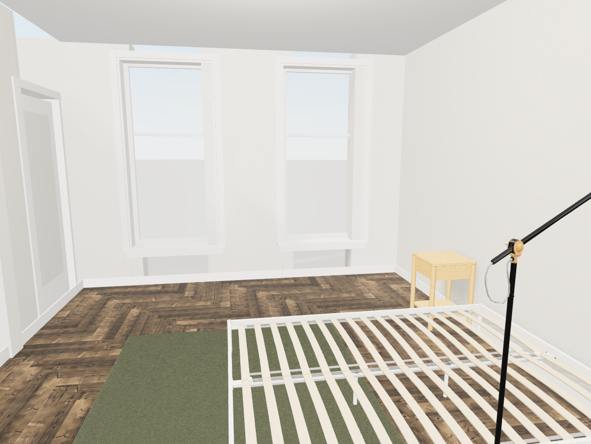
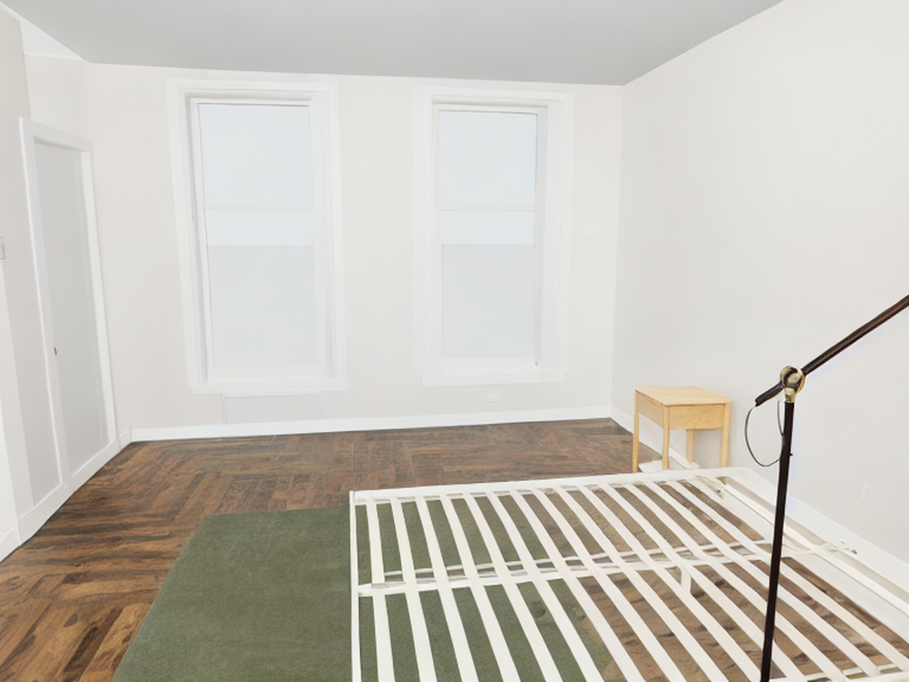
Good framing: window wall ahead, door on the near left, long blank wall on the right. The plan has two double-hung windows where the photo has one triple window, and our floor is dark herringbone where the photo has light parquet. The bed frame and the floor lamp are in the foreground because the camera stands where the photographer stood, beside the bed the solver placed. The polish is barely visible.
pos (13.44, 1.50, 5.01) m · yaw 171° · pitch -9.7° · hfov 71° (VGGT) · photo metrology: eye 1.71 m, 5.5 m from the far wall, +9° off its normal · clamped into the plan room
polish: SD 1.5 img2img strength 0.35, 24 steps, depth ControlNet 0.9 on our render's depth, IP-Adapter 0.5 on the listing photo, 37.0 s on MPS · polish changed pixels by 7.2/255 on average; 67% of the render's edges are within 2 px in the polished image
prompt: interior real-estate photo of a furnished bedroom, dark brown wood floor, white painted walls, honey brown ceiling, large windows with daylight, natural light, photorealistic, sharp, high dynamic range
Bedroom gs-22612_plan_03 · photo gs-22612/05.jpg · weak
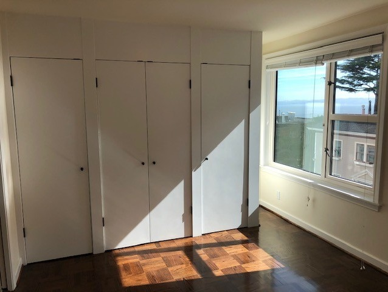
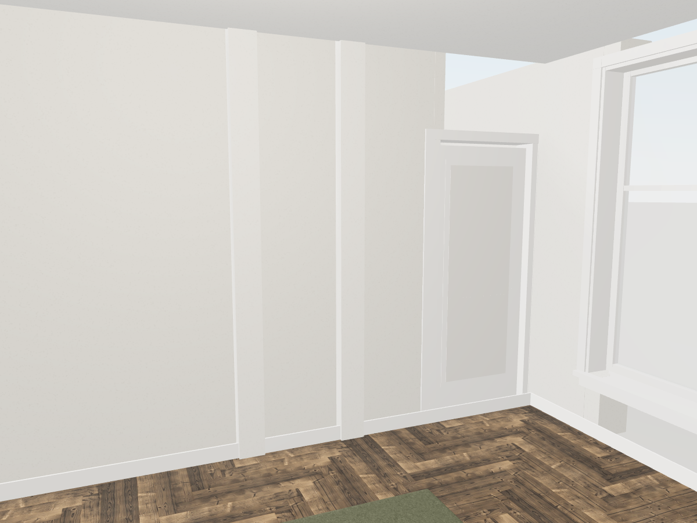
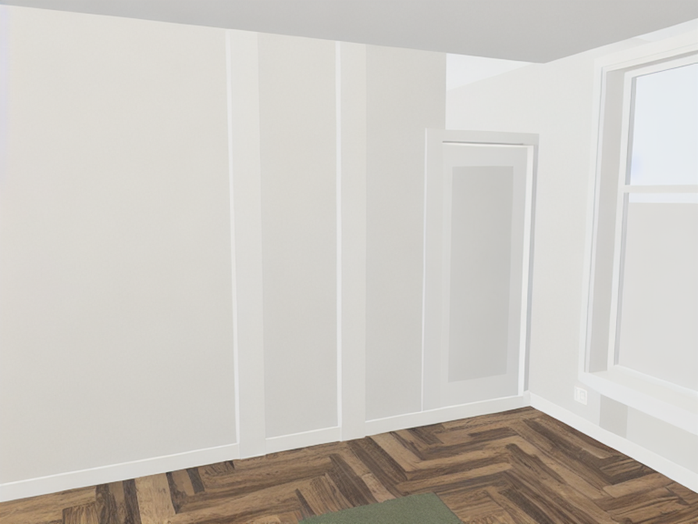
Same layout idea (closet wall ahead, window on the right wall), but our west wall is plain with one door, whereas the photo shows three closet doors, and the furniture is outside the frame (only the rug edge shows). The camera is right; the room is not the photographed one.
pos (15.15, 1.68, 3.21) m · yaw 248° · pitch -7.3° · hfov 64° (VGGT) · photo metrology: eye 1.68 m, 3.6 m from the far wall, +22° off its normal · clamped into the plan room
polish: SD 1.5 img2img strength 0.35, 24 steps, depth ControlNet 0.9 on our render's depth, IP-Adapter 0.5 on the listing photo, 38.0 s on MPS · polish changed pixels by 4.2/255 on average; 63% of the render's edges are within 2 px in the polished image
prompt: interior real-estate photo of a furnished bedroom, dark brown wood floor, white painted walls, light honey ceiling, large windows with daylight, natural light, photorealistic, sharp, high dynamic range
Living Room / Kitchen gs-20665_plan_00 · photo gs-20665/11.jpg · fair
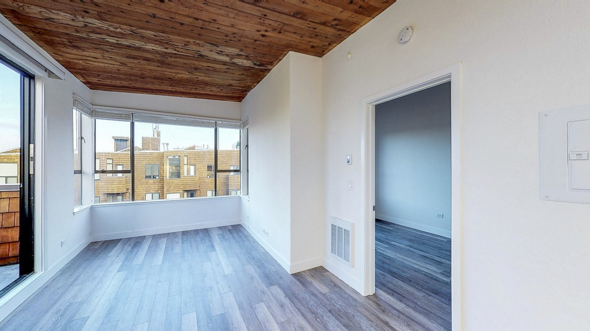
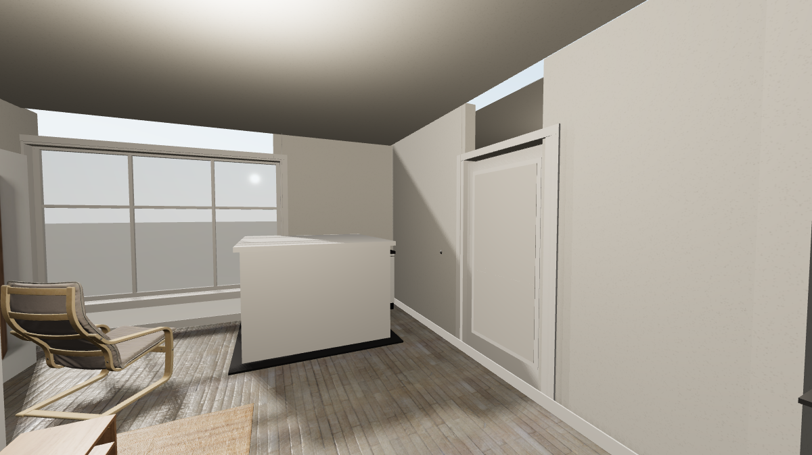
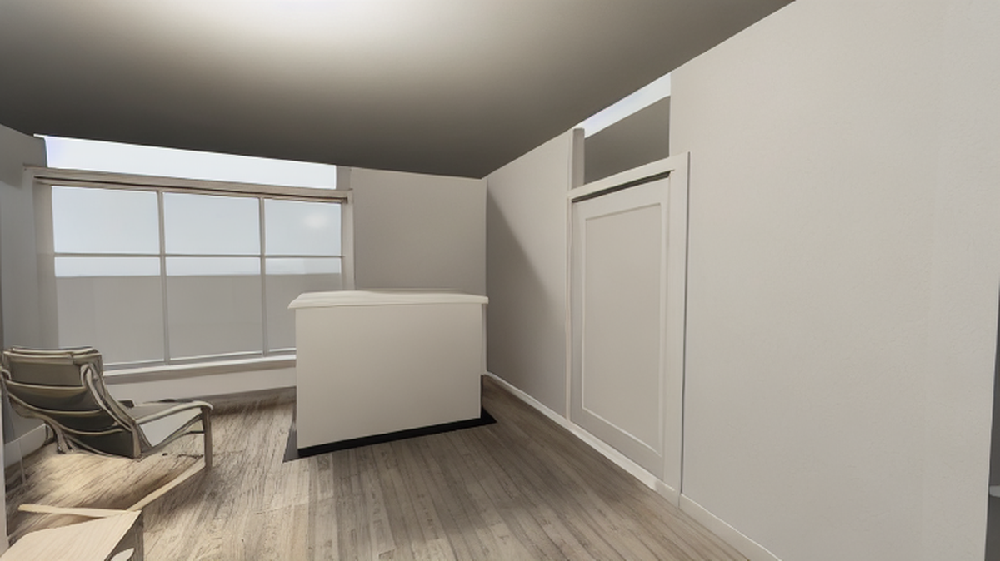
Fair: window wall ahead, door to the bedroom on the right, cedar ceiling missing (ours is white). The photo's corner window and balcony door do not exist in the plan. The camera was moved 1 m toward the room centre by hand because the photographed room is wider than the plan room. The white box is the plan's fireplace/counter fixture.
pos (2.60, 1.44, 7.40) m · yaw 155° · pitch -2.2° · hfov 106° (VGGT) · photo metrology: eye 1.44 m, 4.8 m from the far wall, +25° off its normal · adjusted: metrology put the camera 0.35 m from the plan room's east wall (the photo room is wider), so the render was a wall; moved 1 m toward the room centre, yaw/pitch/fov unchanged
polish: SD 1.5 img2img strength 0.35, 24 steps, depth ControlNet 0.9 on our render's depth, IP-Adapter 0.5 on the listing photo, 25.6 s on MPS · polish changed pixels by 7.9/255 on average; 78% of the render's edges are within 2 px in the polished image
prompt: interior real-estate photo of a furnished living room, cool grey wood floor, white painted walls, warm cedar wood plank ceiling, large windows with daylight, natural light, photorealistic, sharp, high dynamic range
Living Room / Kitchen gs-20665_plan_00 · photo gs-20665/13.jpg · weak
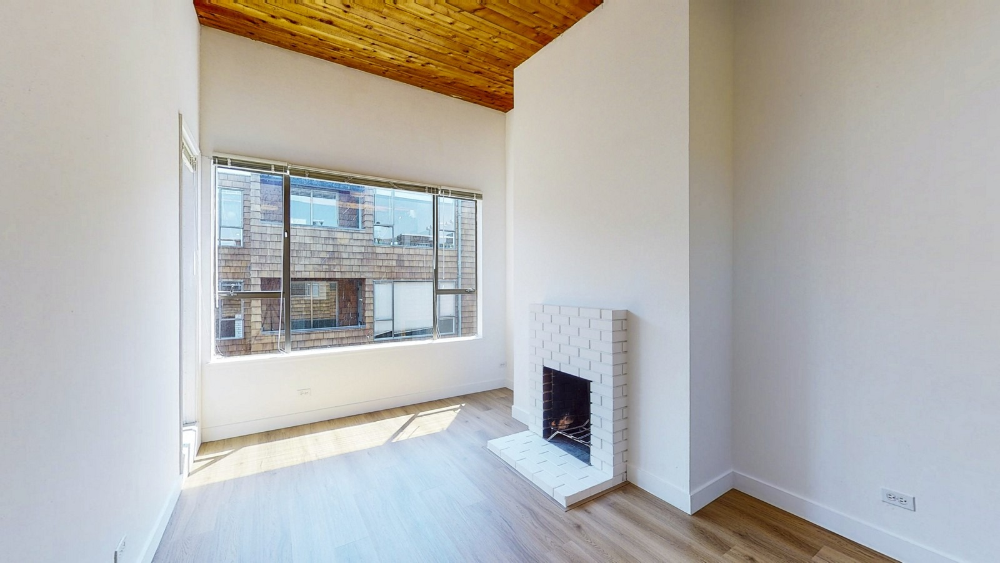
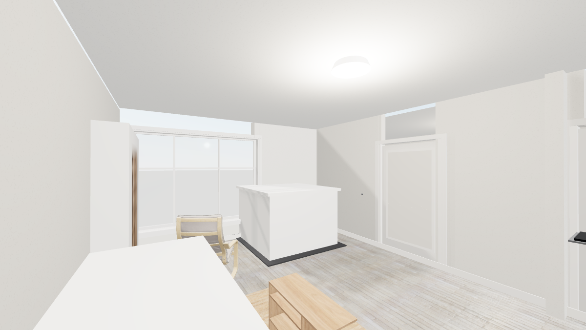
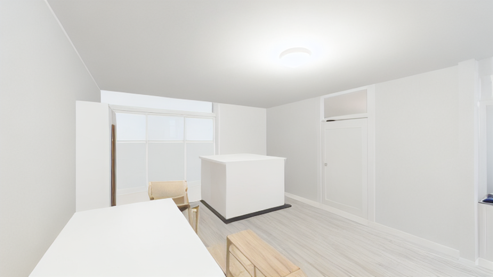
Weak: the photo's room is 4.2 m tall with a fireplace beside the window; our plan room is 2.6 m tall and its fireplace fixture is a plain box. The window and side walls line up roughly. The sofa is in the near foreground.
pos (0.72, 1.60, 7.48) m · yaw 148° · pitch +0.2° · hfov 106° (VGGT) · photo metrology: eye 1.60 m, 4.8 m from the far wall, +32° off its normal
polish: SD 1.5 img2img strength 0.35, 24 steps, depth ControlNet 0.9 on our render's depth, IP-Adapter 0.5 on the listing photo, 25.0 s on MPS · polish changed pixels by 5.3/255 on average; 72% of the render's edges are within 2 px in the polished image
prompt: interior real-estate photo of a furnished living room, cool grey wood floor, white painted walls, warm cedar wood plank ceiling, large windows with daylight, natural light, photorealistic, sharp, high dynamic range
Bedroom gs-20665_plan_00 · photo gs-20665/17.jpg · poor
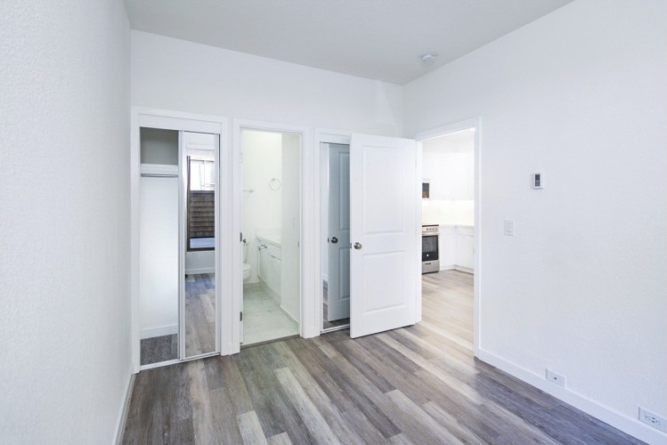
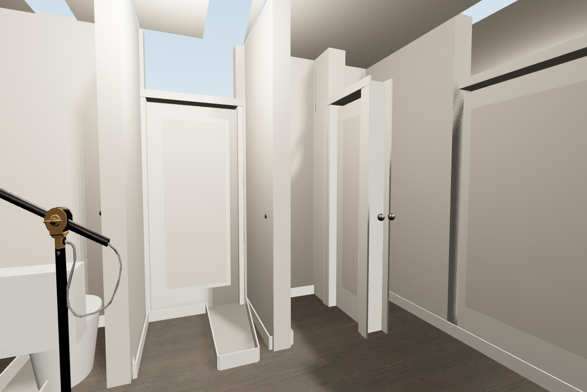
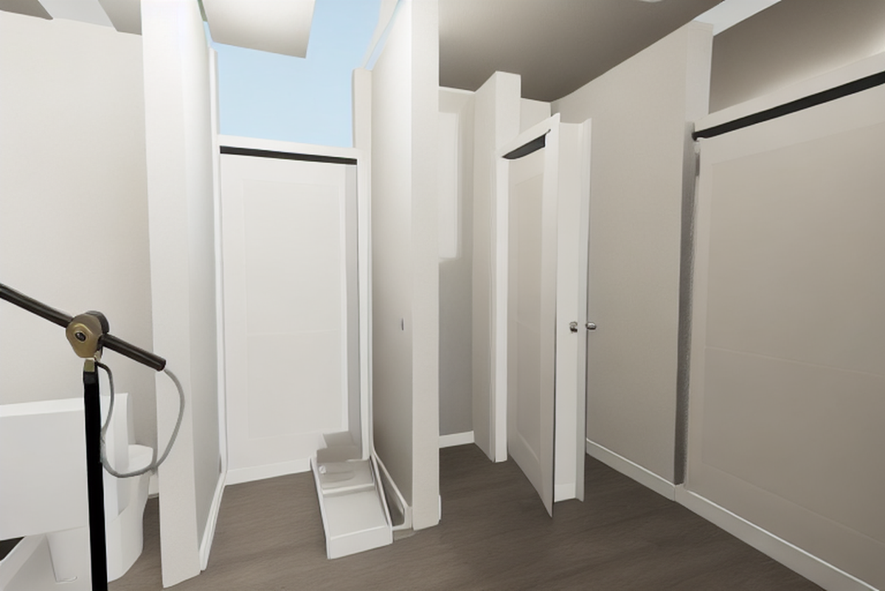
Poor, and a useful warning: the photo shows the bedroom's door wall (mirror closet, bath, hall). Our plan engine produced a jagged south wall there with wall stubs and a toilet fixture that leaked into the bedroom, so the render is a corridor of fragments. Camera and polish are fine; the layout is the problem (plan engine issue).
pos (6.80, 1.28, 3.93) m · yaw 339° · pitch -2.9° · hfov 90° (VGGT) · photo metrology: eye 1.28 m, 2.9 m from the far wall, +21° off its normal
polish: SD 1.5 img2img strength 0.35, 24 steps, depth ControlNet 0.9 on our render's depth, IP-Adapter 0.5 on the listing photo, 32.1 s on MPS · polish changed pixels by 6.2/255 on average; 92% of the render's edges are within 2 px in the polished image
prompt: interior real-estate photo of a furnished bedroom, grey laminate plank floor, white painted walls, light grey ceiling, large windows with daylight, natural light, photorealistic, sharp, high dynamic range